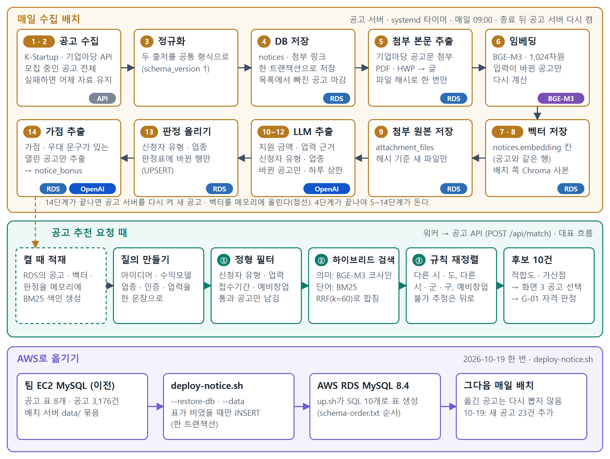
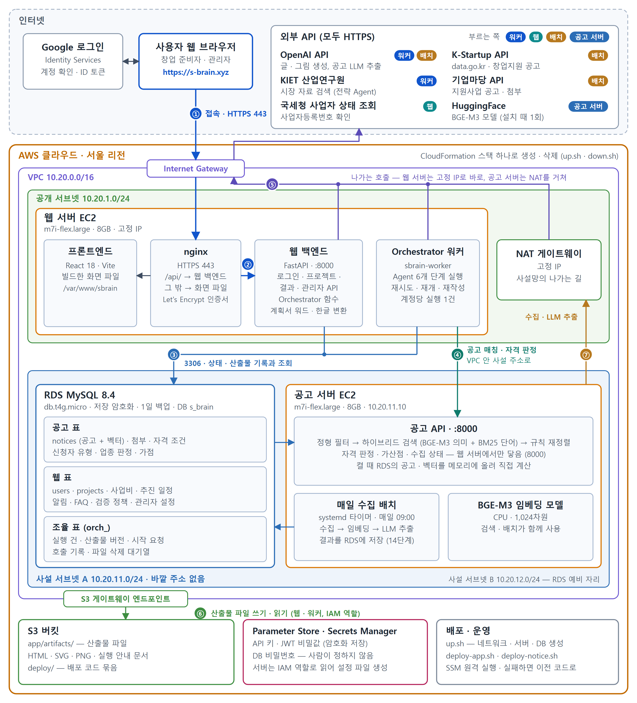
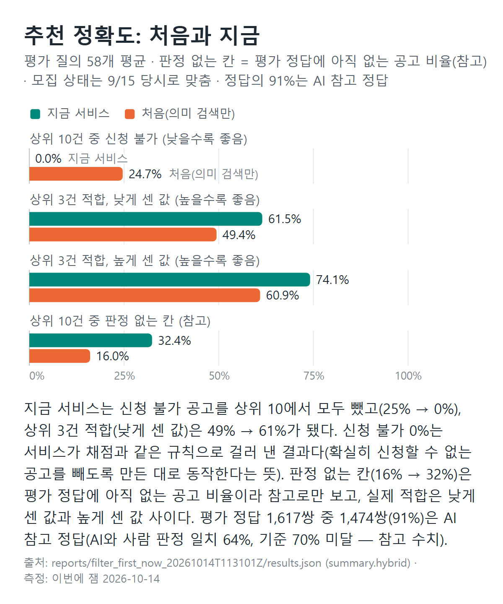

AI 캠프 최종 프로젝트
S-Brain
창업 아이템에 맞는 정부지원사업을 찾아, 사업계획서까지 만들어 주는 서비스
공고 데이터와 매칭 파트를 혼자 만들었습니다. 매일 공고를 모으고, 맞는 공고를 찾아 주고, 공고 서버를 배포하는 것까지요.
정부지원사업 공고는 여러 기관에 흩어져 있고, 지원 자격은 첨부 문서 안에 숨어 있습니다. 그래서 창업자가 계획서를 다 쓴 뒤에야 자격이 안 된다는 걸 알게 되기도 합니다.
한 일
- 공공 API 2곳에서 공고를 모아, PDF·HWP 첨부 본문 추출부터 LLM 자격 판정까지 14단계를 매일 자동으로 돌렸습니다.
- 모집 상태·업력·신청자 유형으로 확실히 안 되는 공고만 먼저 거르고, 의미 검색과 키워드 검색을 합친 방식으로 순위를 매겼습니다. 지역은 거르지 않고 순위에서 뒤로 보냈습니다.
- 다른 에이전트가 부르는 API 4개를 만들고, 공고 서버 배포(설치 스크립트, 매일 배치를 돌리는 systemd 타이머)를 맡았습니다. AWS 스택 구성은 팀원과 함께 했습니다.
- Claude·Codex로 구현하고 서로 다른 모델이 교차 검수하게 해서, 품질을 테스트와 기록으로 확인했습니다.
2026-10-15 지표 보고서 기준. 적합 비율은 LLM 판정이 대부분이라 참고 지표로 봤습니다.

자세히 보기 — 구조와 수치
전체 구조
팀이 만든 AWS CloudFormation 스택 하나로 네트워크, 서버, DB를 한 번에 만들고 지웁니다. 저는 그중 공고 서버 배포를 맡았습니다. 공고 서버는 바깥 주소가 없는 사설 영역에 두고, 웹 서버에서만 접근하게 했습니다.
공고와 벡터는 RDS MySQL에 저장하고, 서버가 켜질 때 메모리에 올려 직접 계산합니다. 처음에는 벡터 DB(Chroma)를 썼지만, 공고가 3천 건 정도라 전부 계산하는 쪽이 더 빠르고(0.77ms 대 3.41ms) 근사 검색 때문에 순서가 어긋나는 일도 없어서 바꿨습니다.

추천이 만들어지는 과정
- 정형 필터 — 모집 상태, 접수 마감, 업력, 신청자 유형(예비창업자·사업자)을 봅니다. 확실히 안 되는 공고만 빼고, 조건을 모르면 남깁니다.
- 하이브리드 검색 — 의미 검색(BGE-M3)과 단어 검색(BM25) 결과를 RRF로 합칩니다.
- 규칙 재정렬 — 지역이 다르거나 신청이 어려워 보이는 공고는 뒤로 보냅니다.
- 후보 10건 → 화면 3건 — 적합도와 가산점으로 3건을 고르고, 자격을 판정합니다.
추천 품질
| 지표 | 처음 (의미 검색만) | 지금 서비스 |
|---|---|---|
| 상위 3건 적합률 (낮게 센 값) | 49.4% | 61.5% |
| 상위 3건 적합률 (높게 센 값) | 60.9% | 74.1% |
| 상위 10건 중 신청 불가 공고 | 24.7% | 0% |
| 하이브리드 검색 정밀도 (P@3, 9/17 별도 평가) | 0.500 | 0.641 |
평가 질의 58개, 판정 1,617쌍 기준. 상위 3건 적합률은 +12.1%p 올랐습니다(95% 구간 +3.4~+20.7%p). 판정의 91%가 LLM 참고 정답이고 사람과 LLM의 일치율이 64%로 자체 기준(70%)에 못 미쳐, 참고 수치로 봤습니다. 신청 불가 0%는 같은 규칙으로 거른 결과라는 점도 보고서에 함께 밝혔습니다. P@3는 질의 52개로 따로 잰 값입니다.

운영 수치
- 공고 3,072건 누적, 첨부 본문 추출 성공률 91.8%
- 수집 배치 28회 실행 모두 성공, 서버 이전 후 13일간 매일 배치 성공, 1회 실행 중앙값 6.6분
- 응답 시간 로컬 235.6ms, 실서버 400ms · 하루 LLM 비용 약 $0.05 (자격요건 추출 제외)
- 다른 에이전트와의 연결 시험 16/16 통과, 자격 판정 2,971건 형식 오류 0건
- 자동 테스트 686개 → 1,111개
어려웠던 점 — 순위를 더 잘 매긴 모델을 일부러 쓰지 않은 이유
- 상황
- 순위를 다시 매기는 모델(리랭커)을 LoRA로 학습해 순위 지표(nDCG@3)를 0.72에서 0.86으로 올렸습니다.
- 고민
- 질문 하나에 1초씩 걸려 느려지고 서버 비용이 커졌습니다. 시험 질문도 17개뿐이라 확신하기 어려웠습니다.
- 결정
- 서비스에는 넣지 않고, 조건 필터와 검색 방식을 다듬어 품질을 올렸습니다. 그 이유를 설계 기록으로 남겼습니다.
Python · FastAPI · MySQL · BGE-M3 · BM25 · OpenAI API · AWS (EC2 · RDS) · systemd